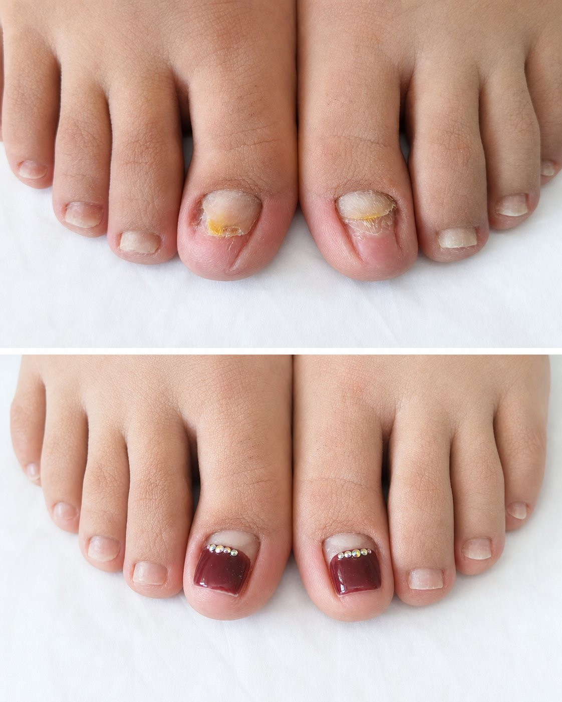
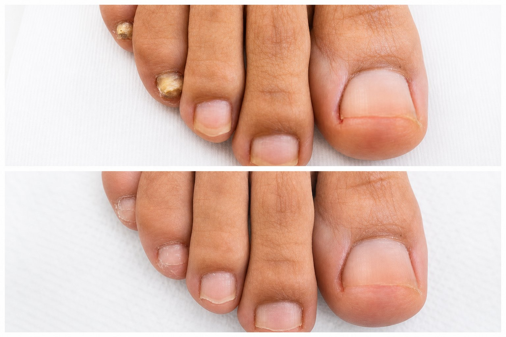
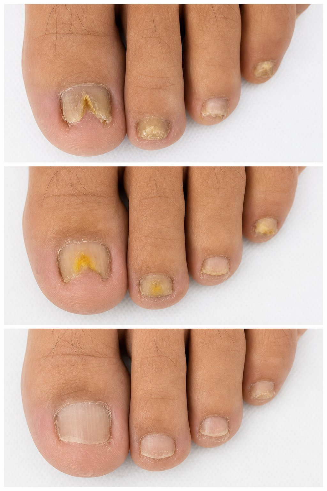
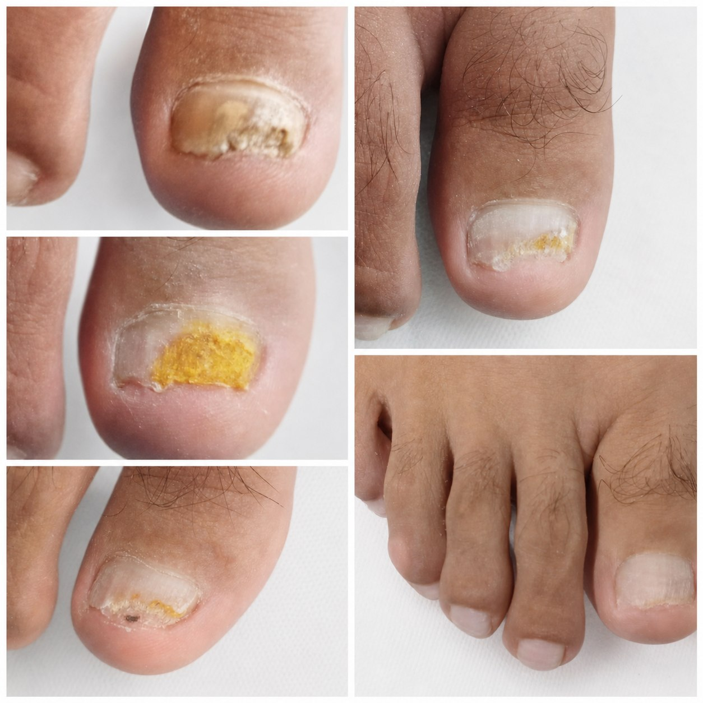

Servicio esencial
Podología básica
- Onicotomía: corte profesional de uñas.
- Queratosis: manejo de callos y durezas.
- Onicogrifosis: atención de uñas engrosadas.
- Asepsia y limpieza durante el procedimiento.
- Indicaciones y cuidados posteriores.
PodoVital Alto Hospicio
Podología básica y avanzada para uñas encarnadas, hongos, callosidades, verrugas plantares y evaluaciones podológicas con indicaciones claras para tu cuidado diario.
Cada atención considera higiene, evaluación visual, procedimiento según necesidad, recomendaciones y cuidados posteriores. La atención está a cargo de Carla Noely Callau Sánchez, podóloga. El foco es que salgas con alivio, claridad y un plan concreto para seguir cuidando tus pies.
Servicios
Atención para mantenimiento, molestias frecuentes y tratamientos especializados, con criterios de higiene y orientación personalizada.
Servicio esencial
Tratamientos especializados
Tratamientos
Si tienes dolor, engrosamiento, hongos o durezas recurrentes, una evaluación permite definir el manejo adecuado y evitar que el problema avance.
Evaluación de onicocriptosis, dolor al calzado, inflamación lateral o molestias al caminar.
Consultar este casoOrientación para cambios de color, engrosamiento, descamación, mal olor o fragilidad de uñas.
Pedir informaciónManejo podologico de zonas de presion, hiperqueratosis y molestias repetitivas al apoyar.
Consultar tratamientoRevisión de lesiones plantares y orientación sobre el tratamiento más adecuado según el caso.
Solicitar evaluaciónAtención de onicogrifosis para mejorar comodidad, higiene y cuidado del calzado.
Hablar por WhatsAppEvaluación inicial de apoyo y orientación para detectar necesidades de cuidado o derivación.
Agendar evaluaciónCasos reales
Fotografías reales de tratamientos realizados. Cada caso requiere evaluación previa; los resultados pueden variar según diagnóstico, constancia, cuidados en casa y condición inicial de la uña.

Tratamiento 1
Caso orientado a mejorar la apariencia y protección de la uña tras evaluación podológica. La imagen muestra el estado inicial y el resultado posterior del procedimiento.
Consultar reconstrucción
Tratamiento 2
Seguimiento de uña con signos compatibles con micosis. Se observa el contraste entre condición inicial y evolución posterior al manejo podológico.
Consultar tratamiento para hongos
Tratamiento 3
Secuencia de evolución donde se aprecia el trabajo progresivo sobre la uña y la importancia de mantener controles e indicaciones posteriores.
Agendar evaluación
Tratamiento 4
Caso de uña con signos compatibles con micosis. La secuencia muestra condición inicial, limpieza podológica, controles y evolución posterior con seguimiento profesional.
Consultar tratamiento para hongosExperiencia de atención
El objetivo es que pedir hora sea fácil y que la atención sea clara desde el primer contacto. Por eso los mensajes de WhatsApp ya van preparados segun el motivo de consulta.
Reservar ahoraEscribes por WhatsApp, comentas tu molestia y coordinas una hora disponible.
Se revisa el motivo de consulta y se define el procedimiento más adecuado.
Se realiza el tratamiento indicado con asepsia, orientación y recomendaciones posteriores.
Procedimientos con enfoque en limpieza, asepsia y cuidado del entorno de atención.
La recomendación se adapta al motivo de consulta, tipo de calzado, hábitos y molestias.
Ubicacion pensada para atender a pacientes de la comuna y sectores cercanos.
Ubicación
Nos ubicamos en Ramón Pérez Opazo 3136, Alto Hospicio. Agenda previamente por WhatsApp para confirmar disponibilidad y recibir indicaciones antes de tu atención.
Contacto
Completa tus datos y se abrirá WhatsApp con un mensaje listo para enviar. También puedes escribir directamente por Instagram.
WhatsApp: +56 9 9474 3844
Dirección: Ramón Pérez Opazo 3136, Alto Hospicio
Preguntas frecuentes
Si hay dolor al caminar, sensibilidad en el borde de la uña, inflamación o molestia con el calzado, es recomendable pedir una evaluación podológica.
Sí. La podología básica considera manejo de queratosis, durezas y cuidados posteriores para reducir molestias recurrentes.
Sí. Puedes enviar tu motivo de consulta y coordinar la evaluación más adecuada según disponibilidad.